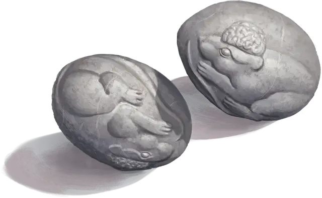

Камни послания
Sending Stones
Чудесный предмет, необычный

Рекомендованная стоимость 400 зм
Камни послания поставляются парами; резьба на каждом камне выполнена так, чтобы легко отличить парный ему камень от остальных. Пока вы касаетесь одного камня, вы можете сотворить с его помощью Послание; цель — носитель другого камня. Если никакое существо не несёт другой камень, вы узнаёте об этом, как только используете камень, и заклинание не сотворяется.
После того как Послание сотворено с использованием любого из камней, оба камня нельзя использовать снова до следующего рассвета. Если один из камней в паре уничтожен, другой становится немагическим.